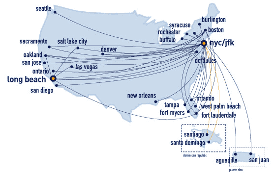
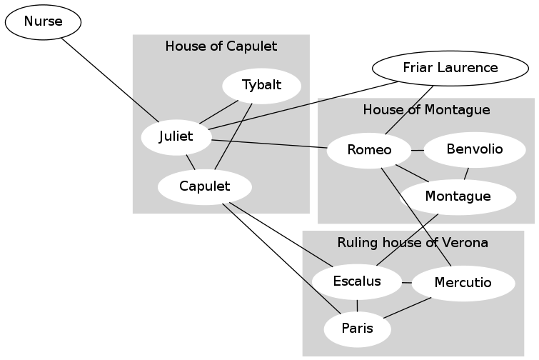
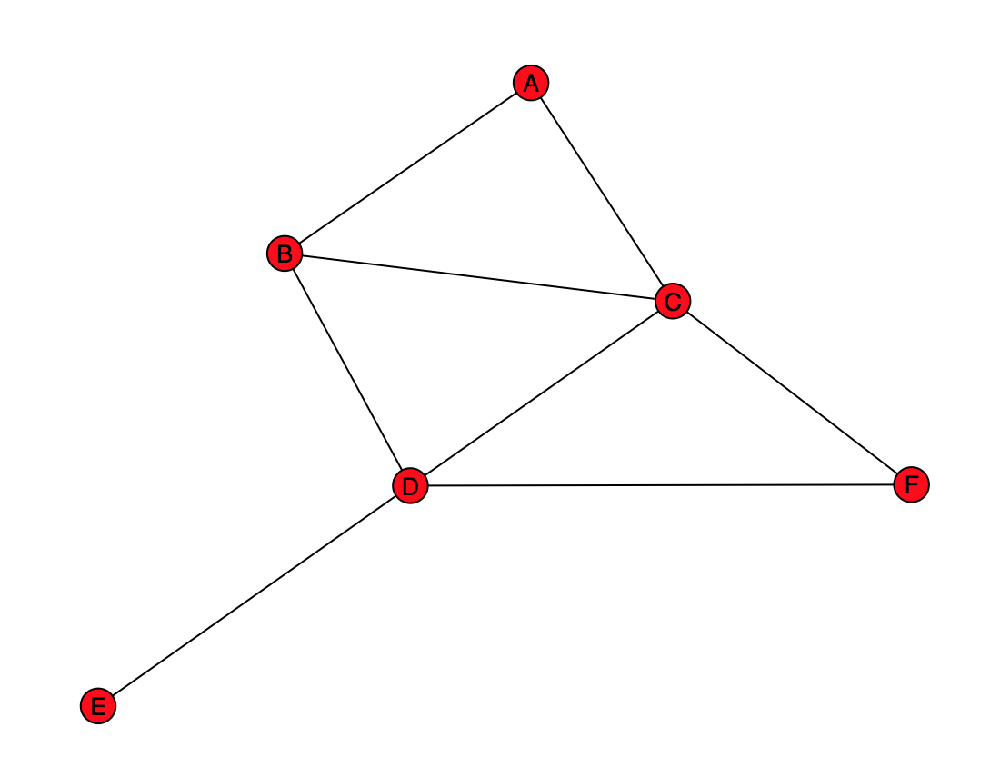

Due: at 5pm on Friday, December 6. Commit and sync this to your github repo and tag it hw8
When you sign into Facebook, it suggests friends. In this assignment, you will write a program that reads Facebook data and makes friend recommendations.
This assignment looks longer than it actually is.
First, download and unzip the file homework8.zip.
Contents:
Facebook suggests people you may be (or should be) friends with. Netflix suggests movies you might like. Amazon suggests products to buy. How do they do that? In this assignment, you will learn one simple way to make such suggestions, called “collaborative filtering”. The actual algorithms used by these companies are closely-guarded trade secrets.
A computer system that makes suggestions is called a recommender system. As background, there are two general approaches: collaborative filtering and content-based filtering.
In this assignment, you will implement a collaborative filtering recommendation system for suggesting friends on Facebook.
A graph or network represents relationships among things. The things are represented as nodes or vertices, and the relationships are represented as edges.
One common use for a graph is to represent travel possibilities, such as on a road map or airline map. The nodes of the graph are cities, and the edges show which cities are directly connected. Then, you can use the graph to plan travel.

Another common use for a graph is to represent friendship among people in a social network. For example, here is the friendship graph for some of the characters of “Romeo and Juliet”:

An edge between person A and person B means that A considers B a friend, and also B considers A a friend.
This graph is unable to represent certain information. For example, Count Paris wishes to wed Juliet, but she does not reciprocate his affection. You do not need to worry about this information, because Facebook does not represent this information either. (Some other social networking sites, such as Twitter and Google+, do permit one-way links.)
In the image above, ignore the gray background and the labels for the families ("houses"); those are there just to help you interpret the graph but are not part of the social network itself.
You will implement two mechanisms for recommending a new friend in a social network. A simple way to state this question is, “For user X, who is the best person to recommend as a friend?”
You will answer a more comprehensive question: “For user X, list some non-friends in order, starting with the best friend recommendation and ending with the worst.” A non-friend is a user who is not X and is not a friend of X. Depending on the recommendation algorithm, the list may include all non-friends or some of them.
For example, for Mercutio the list might be:
Capulet
Montague
Benvolio
Friar Laurence
Juliet
Further note that the recommendations might not be symmetric: the best friend recommendation for Montague might be Mercutio, but the best friend recommendation for Mercutio might be Capulet.
Your task will be to write code that, given a user U in the social network, produces friend recommendations for U, in order from best to worst. You will do this by assigning each potential friend a number called a score, where higher scores indicate a better match. Then you can sort your list according to the score. Given user X, if two people Y and Z would be equally good as new friends for X (they have the same score), then they should be listed in alphabetical order (for names) or numerical order (for numerical user IDs).
The NetworkX library represents a graph in Python. Work through the NetworkX tutorial, up to and including the Accessing edges section. In order for you to use this powerful library effectively, it's important that you actually do the exercises: type the inputs and understand the outputs.
To use the networkx library in a program, write import networkx or import networkx as nx near the top of your program. The latter has already been done for you in the supplied social_network.py, so you can use shorter commands like nx.draw(...) instead of the (slightly longer) networkx.draw(...).
It is always a good idea to test your code on a dataset that is small enough for you to manually compute the results. You will create two such datasets for testing.

Create the above graph, and store it in a variable named practice_graph.
Use the Graph class (not DiGraph, MultiGraph, or MultiDiGraph). Review its documentation before you begin.
To help you verify that your graph is correct, the provided code draws the graph to a window. Compare your graph to the figure above. The nodes may appear in different locations; that's fine so long as the same nodes exist and they are connected in the same way by the edges.
Note that your program will pause until you close the window that contains the the graph drawing.
When you are happy with your graph, comment out the call draw_practice_graph() call (not the definition of the draw_practice_graph function). The reason is so that you don't have to close the window every time you run your program.
Create a graph named rj corresponding to the Romeo and Juliet graph above (ignoring the shaded family/house information).
To help you verify that your graph is correct, the provided code draws the graph to a window and to a file romeo-and-juliet.pdf. Compare your graph to the Romeo and Juliet graph above. The nodes may appear in different locations; that's fine so long as the same nodes exist and they are connected in the same way by the edges.
When you are happy with your graph and the romeo-and-juliet.pdf file, comment out the call draw_rj() call (not the definition of the draw_rj function). The reason is so that you don't have to close the window every time you run your program.
If non-friend Y is your friend's friend, then maybe Y should be your friend too. If person Y is the friend of many of your friends, then Y is an even better recommendation. The best friend recommendation is the person with whom you have the largest number of mutual friends. You will implement this heuristic.
As a concrete example, consider "A" in practice_graph.
A has one friend in common with B (namely, C).
A has one friend in common with C (namely, B).
A has two friends in common with D (namely, B and C).
A has no friends in common with E.
A has one friend in common with F (namely, C).
Similarly, consider Mercutio in the Romeo and Juliet graph.
Mercutio has two friends in common with Capulet (Escalus and Paris).
Mercutio has two friends in common with Montague (Escalus and Romeo).
Mercutio has one friend in common with Benvolio (Romeo).
Mercutio has one friend in common with Friar Laurence (Romeo).
Mercutio has one friend in common with Juliet (Romeo).
Mercutio has no friends in common with the Nurse.
Mercutio has no friends in common with Tybalt.
Therefore, Capulet and Montague are the best friend recommendations for Mercutio, and the Nurse and Tybalt are the worst friend recommendations. (In fact, the Nurse and Tybalt are such poor friend recommendations that your program will not even suggest them.)
Write the following 5 functions, whose documentation strings appear in the template file social_network.py that you were provided.
The template file defines a helper function, friends(graph, user), that you may find useful.
The template file also contains assert statements to help you test your code. We strongly encourage you to write additional tests as well, in order to verify that your code is correct.
Hint: Remember that when Python tests sets or dictionaries for equality, it ignores the order of elements. A consequence of this is that two sets can print differently but be equal because they represent the same set, and likewise for dictionaries. For example, this Python expression evaluates to True:
{ 'Capulet', 'Escalus', 'Montague' } == { 'Montague', 'Capulet', 'Escalus' }
Hint: Throughout this assignment, you are permitted, but not required, to define additional functions beyond the required ones.
Hints for friends_of_friends and common_friends: When defining these routines, you should not use any data structures other than sets. If you find yourself using even one list or dictionary, then you are doing the problem wrong. The reason to use sets is that the code is much shorter and simpler. In fact, a good solution to friends_of_friends is 4 lines long, and a good solution to common_friends is 1 line long. Longer solutions are possible and can also be good style, but the point is that these are small, simple functions. The other functions you will define are little, if any, longer.
Hints for number_map_to_sorted_list:
We will now give a different algorithm for computing a friendship score.
Consider the following hypothetical situation.
Two of your friends are J.D. Salinger and Tim Kinsella.
J.D. Salinger has only two friends (you and one other person).
Tim Kinsella has 7 billion friends.
J.D. and Tim have no friends in common (besides you).
Since J.D. is highly selective in terms of friendship, and is a friend of yours, you are likely to have a lot in common with J.D.'s other friend. On the other hand, Tim is indiscriminate and there is little reason to believe that you should be friendly with any particular one of Tim's other friends.
Incorporate the above idea into your friend recommendation algorithm.
Here is the concrete way that you will do so. We call the technique
“influence scoring”.
Suppose that user1 and user2 have three friends in common: f1, f2, and f3.
In Problem 2, the score for user2 as a friend of user1 is 1+1+1: each
common friend contributes 1 to the score.
In this problem, the score for user2 as a friend of user1 is
1/numfriends(f1) + 1/numfriends(f2) + 1/numfriends(f3), where numfriends(f)
is the number of friends that f has. In other words, each friend F of user1
has a total influence score of 1 to contribute, and divides it equally among all of
F's friends.
In the example above, J.D. Salinger's other friend would have a score of 1/2, and each of Tim Kinsella's friends would have a score of 1/7000000000.
The social_network.py file gives two functions (influence_map and recommend_by_influence) that you should implement. You may find that their implementations are quite similar to code that you have already written in Problem 2; that is OK. The file also gives one test case for each of the two functions.
Do not change the code that you wrote for Problem 2. However, you can reuse most of it. You can solve the problem with just the two new functions (influence_map and recommend_by_influence), plus re-using some unchanged functions from Problem 2.
Does the change of recommendation algorithm make any difference? Maybe not: you can see that Mercutio gets the same friend recommendations with both recommendation approaches. Does everyone get identical results with the two recommendation approaches?
Write code to print a list of people for whom the two approaches make the same recommendations, then print a list of people for whom the two approaches make different recommendations. Each list should be sorted in alphabetical order.
Print output format:
Unchanged recommendations: ['name', 'name', ...] Changed recommendations: ['name', 'name', ...]
Paste the output into an answers.txt file, which you will create.
Hint: There are 5 people for whom the recommendations are the same, and 6 people for whom the recommendations are different.
In Problem 2, every friend recommendation had a score of 1 or more. In Problem 3, every friend recommendation had a score of less than 1. Will that always be the case?
In your answers.txt file, state whether each influence score will always be less than 1. If your answer is “yes”, explain why. If your answer is “no”, then give the smallest graph that you can that has a friend influence score of 1 or greater. In either case, you do not have to write any code — all your answers will appear in your answers.txt file.
Suppose that you wanted to randomly choose a friend connection from a social network. Here are two ways to do this:
The former makes each choice of friend connection equally likely. The latter does not necessarily do so.
In your answers.txt file, describe the smallest graph that you can for which the two approaches lead to different results. In other words, the first approach leads to each edge in the social network graph being chosen with equal probability, and the second approach leads to some edges being more probably to be chosen than others. State the probability of each edge in your example graph being chosen, when using the latter approach.
There is no code to write for this question. Just write your solution in answers.txt
Hint: If you are having trouble, then start with the simplest possible graph, compute the probabilities, and make the graph incrementally more complicated until you find the example you seek.
We have seen that the two recommendation systems give different results. Which one is better?
You will test the two recommendation systems in the following way:
For a perfect recommendation system, the first recommendation for F1 would be F2, and the first recommendation for F2 would be F1. In general, the closer to the front of the list these recommendations are, the better the recommendation system.
For each recommendation system, perform the above experiment 100 times, using the Romeo and Juliet data. Compute the average rank of the correct recommendation within the list of recommendations. (If the correct recommendation does not appear within the list of recommendations, ignore that trial when computing the average rank.)
To prevent different random choices from skewing your results, use the same random choices for both recommendation systems. Another way of saying this is that each time you make a random choice, you should evaluate both recommendation systems using that choice. Then go on to the next choice. Every run of your program will produce slightly different average ranks, but your program should be consistent in terms of which method is better.
Ensure that your code is general. Write it as a function that takes a graph as an input, then call that function. You will re-use the function in Problem 12.
Print output format:
Average rank of influence method: ___ Average rank of number of friends in common method: ___ ___ method is better.
Hint: The average rank will be around 2.
Ensure that your code is documented. In your answers.txt file, give the average index for each recommendation system. State which recommendation system is better for the rj graph.
Hint: To select a random element from a list, use the function random.choice.
Create a graph named facebook from the Facebook data in file facebook-links.txt. As above, use the Graph class.
Print the number of nodes and the number of edges in your facebook graph. The output should be:
Facebook nodes: 63731 Facebook edges: 817090
The facebook-links.txt file in your homework4 directory is courtesy of the Max Planck Institute for Software Systems. Here is a slightly clarified version of the documentation for this file:
File facebook-links.txt contains a list of all of the user-to-user links from the Facebook New Orleans networks. These links are undirected on Facebook.
Format: Each line contains two numeric user identifiers, meaning the second user appeared in the first user's friend list, and the first user appeared in the second user's friend list. Finally, the third column is a UNIX timestamp with the time of link establishment (if it could be determined, otherwise it is '\N').
A Unix timestamp is the number of seconds since January 1, 1970. You may ignore it in this assignment. (Facebook does use the recency of your activity to help it in making recommendations.)
Hint: Don't be alarmed if reading the Facebook data takes a little while. The file is large, and reading it may take up to a minute. However, do not try to draw the Facebook graph. This may cause your computer to hang, and even if it were successful, you would not learn much from a tangled mess of 817,090 edges.
For every Facebook user with an id that is a multiple of 1000, print a list containing the first 10 friend recommendations, as determined by number of common friends. If there are fewer than 10 recommendations, print all the recommendations.
Print output format:
... 28000 ['17125', '7033', '15462', '33049', '51105', '16424', '23', '7996', '1539', '17420'] 29000 ['28606'] 30000 ['14473', '14495', '17951', '19611', '22749', '23259', '30002', '3154', '8269', '862'] ...
(The above is actual output for the recommend_by_influence approach. Your output for the recommend_by_number_of_common_friends approach will differ, but will use the same general formatting.)
Paste the output into answers.txt file.
For every Facebook user with an id that is a multiple of 1000, print a list containing the first 10 friend recommendations, as determined by influence score. If there are fewer than 10 recommendations, print all the recommendations.
Output format is the same as in Problem 9. Paste the output into your answers.txt file.
Considering only those 63 Facebook users with an id that is a multiple of 1000, compute and print the number of Facebook users who have the same first 10 friend recommendations under both recommendation systems, and the number of Facebook users who have different first 10 friend recommendations under the two recommendation systems. This program will take some time to compute (at least a couple of minutes).
Print output format:
Same: __, Different: __
Paste the output into your answers.txt file.
Repeat the procedure you followed for Problem 7, but for the Facebook data.
In your answers.txt file, give the average index for each recommendation system. State which recommendation system is better for the facebook graph.
Print output format:
Average rank of influence method: ___ Average rank of number of friends in common method: ___ ___ method is better.
Hint: The average indices should be in the 100-400 range. This is because the social network is very large, you are using very impoverished data (just existing connections) and you are looking for one specific “right” answer (even though in real life many of the recommendations are probably useful).
Note: You will evaluate the recommendation systems on 100 randomly-chosen edges out of the 817,090 edges in the Facebook graph. If you were to choose 100 different randomly-chosen edges, you would get different results. The answers are likely to be informative nonetheless. If you choose 100 edges at random, it is unlikely that you will make an unlucky choice, such that technique 1 is better than technique 2 for those 100 edges, but technique 2 is better than technique 1 overall. It's still a possibility, of course. The more edges you choose at random, the less likely you are to be unlucky in that way. We asked you to do the evaluation on 100 randomly-chosen edges because your code would be very slow if you used (say) 1000 choices.
You are almost done!
At the bottom of your answers.txt file, in the “Collaboration” part, state which students or other people (besides the course staff) helped you with the assignment, or that no one did.
At the bottom of your answers.txt file, in the “Reflection” part, reflect on this assignment. What did you learn from this assignment? What do you wish you had known before you started? What would you do differently? What advice would you offer to future students?
Commit the following files to your github repo, sync it, and tag it as hw8.
If you get an error
ImportError: No module named networkx
then you need to install the networkx package by requesting an academic license for the Enthought Python Distribution as described in Lab 8 and detailed on this website .